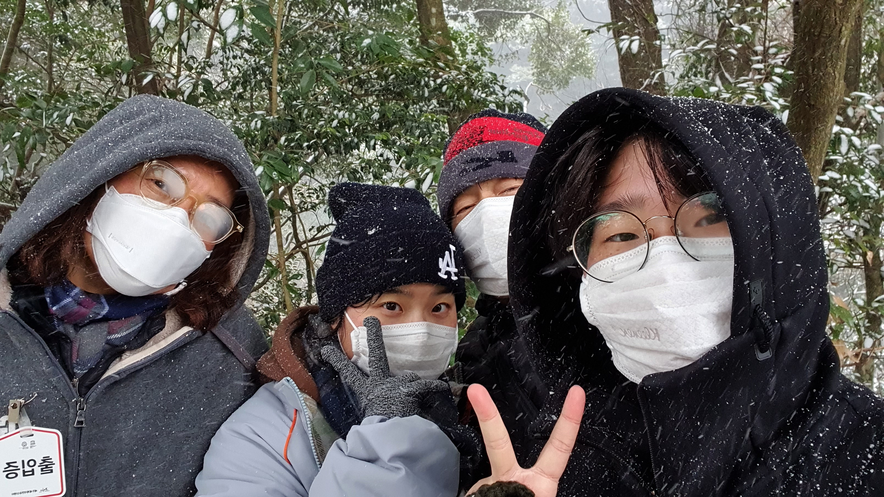

저희 가족은 4인 가족이에요. 아버지,어머니,언니,저로 구성되어 있어요. 저희 가족은 정말 화목하고 가족애가 끈끈한 것 같아요. 가끔은 서로서로가 안 맞을 때도 있지만 타협점을 찾으면서 잘 지내요.
저희 아부지는 가족의 중심! 영양의 물개! 남자하면 김영재! 이렇게 소개 할 수 있어요. 언니와 함께 우리 가족의 분위기 메이커라고 할 수 있어요. 처진 분위기를 센스있는 말씀과 몸짓만으로도 밝은 분위기로 전환시켜주세요! 그런 센스있는 행동들이 대단하고 배울점이라고 생각해요. 항상 가족을 위해 일해주시는 아부지! 집에서는 푹 쉬시고 특히 무리 않아셨으면 좋겠어요! 지금도 건강하시지만 더 건강해지셨으면 좋겠어요! 건강 최고!!
저희 어머니는 가족의 중심! 영광의 막내! 식물하면 김경희! 이렇게 소개 할 수 있어요. 오마니는 식물을 정말 사랑하시며 모르는 식물이 있다거나 궁금한 식물이 있어 질문하면 대부분 대답을 해주세요. 한 분야를 좋아한다는 것만으로 많은 지식과 애정을 쌓는다는게 대단하신 것 같아요. 그림도 정말 잘 그리시는데요 세월 때문에 그림을 못 그리시는게 저는 정말 아쉽고 슬퍼요. 그래도 요즘 조경기능사 공부한다고 바쁘신 어머니가 좋아요!
저희 언니는 인생의 선배! 최고의 친구! 농락하면 김예빈! 이렇게 소개 할 수 있어요. 언니는 저의 인생 선배에요. 저보다 5년 먼저 태어나 5년 빠르게 살고 있는 언니가 가끔보면 신기하고 대단하다고 생각들어요. 물론 아부지,어무니도 항상 대단하다고 생각하고 있어요. 그리고 항상 절 검나 잘 놀려요. 정말 절 놀릴려고 태어난듯해요. 신기해요. 저도 언니처럼 언니를 놀리고 싶은데 잘 안돼요! 답답해요!!!!! 언니에게 놀리는 방법을 배워보고 싶어요. 사람 기분 나쁘지 않게 잘 놀리는 것 같아요. 코미디언 해도 괜찮을 것 같아요. 아님 유튜브? 추천~추천~